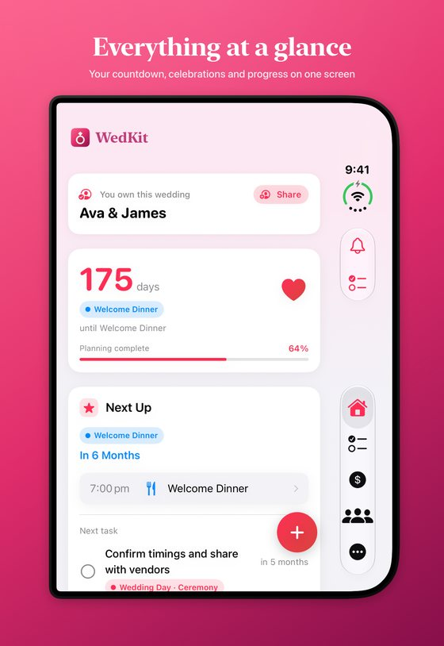
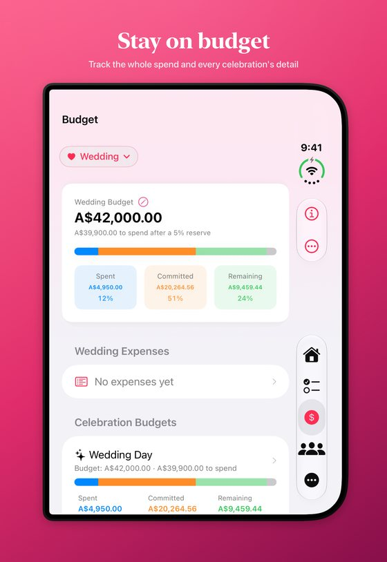
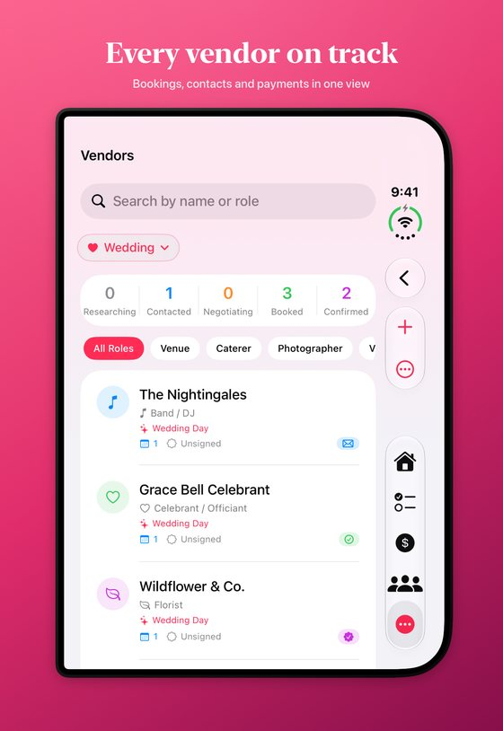

Worked on the Westpac iOS app as part of its platform modernisation.
Almost 7 years shipping native iOS apps
Phong Ngo
Senior iOS Engineer — Swift, SwiftUI & UIKit
I build native iOS apps used by millions: banking apps at Westpac and ING, and the Paravi streaming apps for iOS and tvOS. I care about polished, responsive UI, clean modular code, and apps that stay fast and stable in production. I also work across the web stack with React, TypeScript and .NET.
- Sydney, Australia
- linkedin.com/in/phongngo0511
- github.com/phongngo511
Main technical contributor on Payments, Account Dashboard and Apple Wallet features.
Paravi streaming apps for iOS and tvOS, 1M+ users, 4.8★ on the App Store.
Report generation on large auction datasets in the MLA saleyard app.
Selected work
Apps I've built and shipped
What each app does, what I was responsible for, and what came out of it.

WedKit — Wedding Planner
A wedding planning app for couples, live on the App Store for iPhone and iPad. Budget, guests, events and tasks, shared in real time with a partner.
My role: Sole engineer. Designed, built and shipped it end to end.
- 16 feature modules
- Offline-first sync
- iPhone + iPad
Key contributions & outcomes
- Designed and shipped adaptive iPhone and iPad layouts in SwiftUI, with VoiceOver and Dynamic Type support.
- Split the app into 16 feature modules using MVVM, dependency injection and coordinator navigation, with Swift Concurrency, Observation and Core Data.
- Built offline-first, real-time collaboration with CloudKit sharing (CKShare) and merge-based sync.
- Added StoreKit in-app purchases with a local entitlement cache.




Westpac iOS App
One of Australia's largest banking apps, used by over 5 million customers for everyday banking and payments.
My role: iOS engineer in a cross-functional squad working on the app's platform modernisation. Also part of the UNITE program for the regional banks (St.George, Bank of Melbourne, BankSA).
- 5M+ customers
- UNITE program
Key contributions & outcomes
- Helped modernise the app with SwiftUI and Server-Driven UI, so new screens can ship faster.
- Supported the regional bank apps (St.George, Bank of Melbourne, BankSA) through the UNITE program.
- Delivered secure features in line with Australian financial compliance requirements.
- Took part in code reviews and shared guidance on SwiftUI, testing and modular design across squads.


ING Australia Banking
ING's everyday banking app for over 2 million Australian customers: accounts, payments and cards.
My role: Main technical contributor on a feature team, from design through testing and App Store release.
- 2M+ customers
- 98% lift in digital sales (first month)
Key contributions & outcomes
- Delivered Payments, Account Dashboard and Apple Wallet features, contributing to a 98% increase in digital sales in the first month.
- Turned designs into shippable payment and account screens, working closely with design, product and QA.
- Improved login with Face ID / Touch ID, Keychain and Secure Enclave keys, and integrated features with backend REST services.
Screenshots are from the previous ING app I worked on. The App Store link opens ING's new app.


Paravi Streaming (iOS & tvOS)
A Japanese video streaming service for dramas, variety and anime on iPhone, iPad and Apple TV.
My role: iOS engineer on the iOS and tvOS apps, including the shared video player.
- 1M+ users
- 99.8% crash-free
- 4.8★ rating
Key contributions & outcomes
- Built the commercial iOS and tvOS streaming apps for over 1 million users, reaching 99.8% crash-free sessions and a 4.8★ App Store rating.
- Designed a reusable AVFoundation video playback framework shared by both apps, with Google Cast support for watching on other screens.


More apps
Saleyard Data Capture
An in-house iOS app for recording livestock auction data in the field.
- ~43% faster reports
- End-to-end ownership
- Owned the app from technical design to production support.
- Built offline-first storage and background sync so it works reliably with poor connectivity.
- Made report generation about 43% faster on large datasets and redesigned the main screens with field teams.
Streamplate Food Ordering
A Sydney-based startup app for personalised food ordering, health tracking, reservations and in-venue ordering.
- +85% engagement
- 30% fewer crashes
- Led iOS development: set the architecture and shipped the ordering, health tracking and reservation features.
- Integrated Firebase Auth, Cloud Messaging, Remote Config and Analytics.
Experience
Where I've worked
-
Senior Software Engineer — iOS @ Cognizant Australia
Consultant engineer placed with enterprise clients.
- Westpac (2024): iOS platform modernisation; UNITE program (St.George, Bank of Melbourne, BankSA).
- ING (2021 – 2022): Payments, Account Dashboard, Apple Wallet and biometric login for 2M+ customers.
- Meat & Livestock Australia (2023): owned an offline-first field data capture app end to end.
- Telstra Health and Tourism and Events Queensland: full-stack work with React, TypeScript and .NET (C#, SQL Server) on Azure and AWS.
-
Software Engineer — iOS @ Streamplate Pty Ltd
iOS lead at a Sydney-based food-ordering startup (now Bright OS). Set the architecture and shipped the core ordering, health tracking and reservation features.
-
Software Engineer — iOS @ CodeComplete Co. Ltd
Built the Paravi streaming apps for iOS and tvOS and a shared AVFoundation playback framework.
Skills & credentials
What I work with
iOS
Architecture
Quality
Delivery
Web & back end
AI tools
Education
B.E., IT Software Engineering
Danang University of Science and Technology · 2013 – 2018
Certifications
AWS Certified Solutions Architect – Associate (2023)
Google Cloud Associate Cloud Engineer (2023)
Scrum Master Certified (SCRUMstudy)
Get in touch
I'm always happy to hear about iOS roles, contract or permanent, or just to chat about building great apps. I'm based in Sydney and available now.